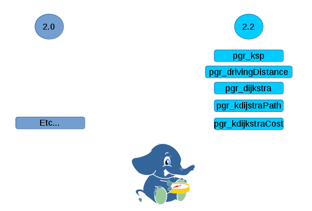

データベース内の
最短経路探索
pgroutingなどについて
Presented by Vicky Vergara

"Al andar se hace camino
y al volver la vista atrás
se ve la senda que nunca
se ha de volver a pisar."
パスは、歩行によって行われ
そして、振り返って
パスは決してありません
彼は再び歩きました。
Antonio Machado
Celia Virginia Vergara Castillo
- 経済学者, コンピュータ科学者
- Georepublic
- pgRouting 開発者
- メキシコ人
- Vickyとして知られています
FOSS4G をお楽しみください!!!

pgRouting プロジェクト
An Open Source プロジェクト, ...


An Open Source プロジェクト, ...

A Library providing
Routing in the Database
Let's Route ...
- Shortest Path Algorithm
- Dijkstra
- A-Star.
- Alternative Routes
- Turn Restrictions
- Traveling Salesperson Algorithm
- Drivetime Analysis
- Vehicle Route Problem Solver
Create a Database
pgRouting extends PostgreSQL/PostGIS
CREATE DATABASE routing;
\c routing
CREATE EXTENSION postgis;
CREATE EXTENSION pgrouting;
SQL Query
SELECT * FROM pgr_dijkstra('
SELECT gid as id,
source,
target,
length as cost
FROM ways',
30, 60, false);
Query Result
seq | path_seq | node | edge | cost | agg_cost
----+----------+------+------+--------+----------
1 | 1 | 30 | 53 | 0.0591 | 0
2 | 2 | 44 | 52 | 0.0665 | 0.0591
3 | 3 | 14 | 15 | 0.0809 | 0.1256
4 | 4 | 13 | 14 | 0.0726 | 0.2065
5 | 5 | 12 | 13 | 0.0812 | 0.2791
6 | 6 | 11 | 12 | 0.0074 | 0.3603
7 | 7 | 10 | 6869 | 0.0164 | 0.3677
8 | 8 | 59 | 72 | 0.0109 | 0.3841
9 | 9 | 60 | -1 | 0 | 0.3950
(9 rows)

Costs


Towards v3.0
Goals
developers
- Boost
- Undirected Graph
- Directed Graph
- Internal library
Goals
users
- Support for big integer
- Avoid user contradictory input
An Idea
Keep the graph in memory
to speedup subsequent requests
pgRouting 2.0
pgRouting 2.0

Cool code
void existing_complicated_code() {
A // 100 lines of code
B // 500 lines of complicated code with a bug
C // 50 more lines of code
} copy / paste
void new_complicated_code() {
D // 100 lines of code
// TODO copy/paste 500 lines of existing complicated code
E // 50 more lines of code
} User contradictory input
select * from pgr_foo(
'select id, source, target, cost, reverse_cost from edges', 3, 5,
false -- directed flag,
false -- has_rcost flag
);
and
select * from pgr_foo(
'select id, source, target, cost from edges', 3, 5,
false -- directed flag,
true -- has_rcost flag
);
pgRouting plan
Plan
- Precise definition of Graphs
- Gradual creation of internal library
- Incremental releases
pgRouting 2.1
pgRouting 2.1
ANY-INTEGER
- INTEGER
- SMALLINT
- BIGINT
ANY-NUMERICAL
- INTEGER
- SMALLINT
- BIGINT
- REAL
- FLOAT
Weighted Directed Graph
-
Let $V$ be a set of vertices
$V = source \cup target \cup \{start_v\} \cup \{end_v\}$ -
Let $E$ be a set of edges
- when $reverse\_cost = \varnothing$:
$E = \{ (source_i, target_i, cost_i) | cost_i \geq 0 \}$ - when $reverse\_cost \neq \varnothing$:
$E = \{ (source_i, target_i, cost_i) | cost_i \geq0 \}$
$\cup \quad \{ (target_i, source_i, reverse\_cost_i) | reverse\_cost_i \geq 0)\}$
- when $reverse\_cost = \varnothing$:
- $G_d(V,E)$ is a weighted directed graph
Weighted Directed Graph
source | target | cost | reverse_cost
-------+--------+------+------------
3 | 6 | 40 | 38
3 | 8 | 25 | -25
6 | 8 | -1 | 32
Weighted Undirected Graph
-
Let $V$ be a set of vertices
$V = source \cup target \cup \{start_v\} \cup \{end_v\}$ -
Let $E$ be a set of edges
- when $reverse\_cost = \varnothing$:
$E = \{ (source_i, target_i, cost_i) | cost_i \geq 0 \}$
$\cup \quad \{ (target_i, source_i, cost_i) | cost_i \geq 0 \}$ - when $reverse\_cost \neq \varnothing$:
$E = \{ (source_i, target_i, cost_i) | cost_i \geq0 \}$
$\cup \quad \{ (target_i, source_i, cost_i) | cost_i \geq 0 \}$
$\cup \quad \{ (target_i, source_i, reverse\_cost_i) | reverse\_cost_i \geq 0)\}$
$\cup \quad \{ (source_i, target_i, reverse\_cost_i) | reverse\_cost_i \geq 0)\}$
- when $reverse\_cost = \varnothing$:
- $G_u(V,E)$ is a weighted undirected graph
Weighted Undirected Graph
source | target | cost | reverse_cost
-------+--------+------+-------------
3 | 6 | 40 | 38
3 | 8 | 25 | -25
6 | 8 | -1 | 32
pgr_Dijkstra
-
Given a graph:
\[ G(V,E) = \begin{cases} G_d(V,E) & \quad \text{when } directed = true\\ G_u(V,E) & \quad \text{when } directed = false\\ \end{cases} \] - and the starting and ending vertices:
$start_v$ and $end_v$ - The algorithm returns a path $\pi$, if it exists, which is the shortest path using Dijsktra algorithm between $start_v$ and $end_v$ in terms of a sequence of vertices and of edges:
\[ \pi = \{(path\_seq_i, node_i, edge_i, cost_i, agg\_cost_i) | \\ path\_seq_i = i \\ node_1 = start_v \\ \land node_{|\pi|} = end_v \\ \land edge_i = \begin{cases} id(node_i, node_{i+i}, cost_{(node_i, node_{i+i})} ) & \quad \text{when } i \neq |\pi| \\ -1 & \quad \text{when } i = |\pi| \\ \end{cases} \\ \land agg\_cost_i = \sum_{j=1}^{i-1} cost_j \} \] - If there is no path, $\pi = \varnothing$
Weighted Directed Graph
with reverse cost
Weighted Directed Graph
no reverse cost
Weighted Undirected Graph
with reverse cost

Weighted Undirected Graph
no reverse cost

pgr_dijkstra
on undirected graph
With reverse cost
SELECT * FROM pgr_Dijkstra(
'SELECT id, source, target, cost, reverse_cost FROM edges',
3, -- start_vid
5, -- end_vid
false);
Without reverse cost
SELECT * FROM pgr_Dijkstra(
'SELECT id, source, target, cost FROM edges',
3, 5,
false);
pgr_dijkstra
directed graph
With reverse cost
SELECT * FROM pgr_Dijkstra(
'SELECT id, source, target, cost, reverse_cost FROM edges',
3, 5,
true);
Without reverse cost
SELECT * FROM pgr_Dijkstra(
'SELECT id, source, target, cost FROM edges',
3, 5,
true);
pgr_Dijkstra
Variations
One to one
SELECT * FROM pgr_Dijkstra(edges_sql,2,3);
seq | path_seq | node | edge | cost | agg_cost
-----+----------+------+------+------+---------
Many to 1
SELECT * FROM pgr_Dijkstra(edges_sql,ARRAY[2],3);
seq | path_seq | start_vid | node | edge | cost | agg_cost
-----+----------+-----------+------+------+------+---------
pgr_Dijkstra
Variations
One to many
SELECT * FROM pgr_Dijkstra(edges_sql, 2,ARRAY[3]);
seq | path_seq | end_vid | node | edge | cost | agg_cost
-----+----------+---------+------+------+------+---------
Many to many
SELECT * FROM pgr_Dijkstra(edges_sql,ARRAY[2],ARRAY[3]);
seq | path_seq | start_vid | end_vid | node | edge | cost | agg_cost
----+----------+-----------+---------+------+------+------+---------
pgr_Dijkstra
from 2, 7 to 3, 5
Using: one to many
Select * from pgr_Dijkstra(edges_sql,2,ARRAY[3,5]);
Select * from pgr_Dijkstra(edges_sql,7,ARRAY[3,5]);
Using: many to one
Select * from pgr_Dijkstra(edges_sql,ARRAY[2,7],3);
Select * from pgr_Dijkstra(edges_sql,ARRAY[2,7],5);
Using: many to many
Select * from pgr_Dijkstra(edges_sql,ARRAY[2,7],ARRAY[3,5]);
pgRouting 2.2 ...
pgRouting 2.2 ...
Functionality
pgRouting 2.2 ...
Documentation

pgRouting 3.0
pgRouting 3.0
pgRouting future
... y al volver la vista atrás
se ve la senda que nunca
se ha de volver a pisar.
Antonio Machado
Interested in pgRouting?
- pgRouting: http://pgrouting.org
- Email: vicky@georepublic.de
- Website: http://georepublic.info